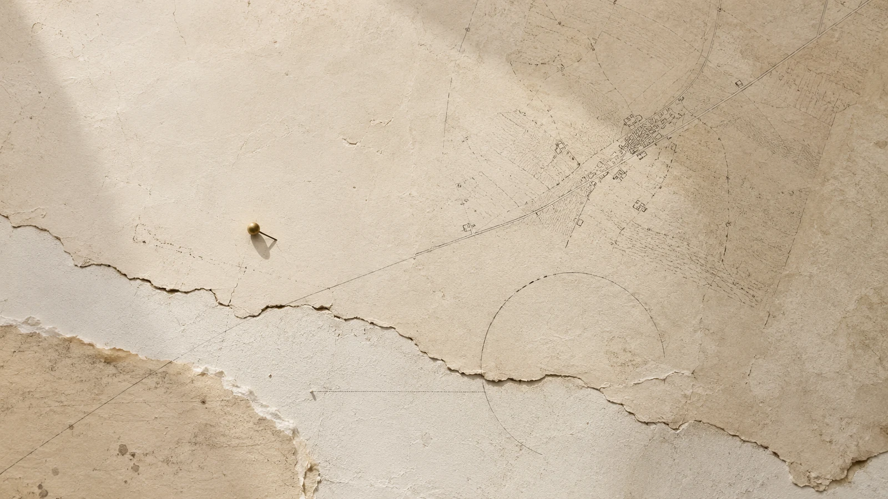

Saggio 20
Il futuro degli altri
Le piazze, il potere e la libertà di decidere ciò che verrà
29 ottobre 2026 · Macro
Quaderno del presente
Seguire una decisione fino al luogo in cui produce i suoi effetti. Da qui prendono forma i saggi, le guide e il lavoro civile di Alessandro Gentili.
Saggio 20
Le piazze, il potere e la libertà di decidere ciò che verrà
29 ottobre 2026 · Macro

Saggio 19
Dai fondi europei alle graduatorie regionali, il difficile incontro fra lavoro, impresa e responsabilità pubblica.
14 ottobre 2026 · Macro

Saggio 18
Tempo politico, costi rinviati e il deficit di rappresentanza del futuro.
30 settembre 2026 · Macro
01 · Temi e percorsi
Un’istituzione, una piattaforma, una regola sembrano lontane finché i loro effetti prendono forma in un luogo. Potere e territorio sono due modi di osservare lo stesso passaggio.
Seguire il comando attraverso istituzioni, tecnica e organizzazioni.

Guardare le conseguenze dal luogo in cui diventano esperienza quotidiana.
Tra le due scale Le periferie del potere
Tutti i temi e percorsi02 · Cerchi d’inchiostro
Una percezione, il mezzo che la organizza, l’informazione che può essere trasmessa: la decima triade tiene distinti questi tre piani. Le guide danno a ciascun autore lo spazio per sviluppare il proprio argomento.
Leggi «Materia, medium e informazione»Decima triade · Le tre guide
Orientamento
Scrittura civile e marketing strategico sono due applicazioni della stessa disciplina: ricercare, interpretare, organizzare e dare direzione.
Forme della ricerca
Scrivere è sottrarre.
Togliere il rumore, fino a che resta ciò che regge.
La parola è pensiero che ha trovato misura.
Progetti editoriali, collaborazioni e percorsi culturali selezionati.
Respiro, misura, ascolto.
Testi, interventi e documenti raccolti nel tempo.
Corrispondenza
Idee, sistemi, libri e progetti in corso. Solo quando c’è qualcosa che vale la pena condividere.
Iscriviti alla Lettera